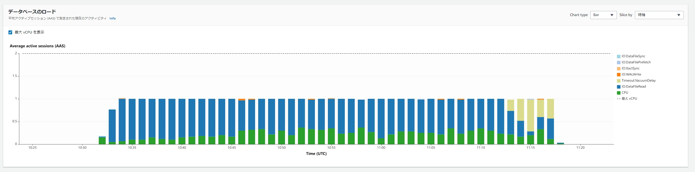

PostgreSQLでMerge／Upsertを実行したら遅かったので力技で解決した
検証用環境の作成
テーブル作成
drop table t1;
create table t1(a numeric,b varchar(100) ,c varchar(100) ,d varchar(100) ,e varchar(100) , f varchar(100) , g varchar(100) , h varchar(100) , i varchar(100) , j varchar(100) , k varchar(100) , l varchar(100) , m varchar(100) , n varchar(100) );
drop table t2_delta;
create table t2_delta(a numeric,b varchar(100) ,c varchar(100) ,d varchar(100) ,e varchar(100) , f varchar(100) , g varchar(100) , h varchar(100) , i varchar(100) , j varchar(100) , k varchar(100) , l varchar(100) , m varchar(100) , n varchar(100) );
ALTER TABLE t1 DROP CONSTRAINT t1_PKEY;
ALTER TABLE t1 ADD CONSTRAINT t1_PKEY PRIMARY KEY(a,b,c,d);
データ作成
truncate table t1;
insert into t1
SELECT i, i+1, i*2 ,i/2 ,string_agg(str, '') ,string_agg(str, '') ,string_agg(str, '') ,string_agg(str, '') ,string_agg(str, '') ,string_agg(str, '') ,string_agg(str, '') ,string_agg(str, '') ,string_agg(str, '') ,string_agg(str, '')
FROM
(SELECT md5(clock_timestamp()::text) as str , i
FROM generate_series(1,2) length, generate_series(1,10) num(i)
)t
GROUP BY i;
truncate table t2_delta;
insert into t2_delta
SELECT i, i+1, i*2 ,i/2 ,string_agg(str, '') ,string_agg(str, '') ,string_agg(str, '') ,string_agg(str, '') ,string_agg(str, '') ,string_agg(str, '') ,string_agg(str, '') ,string_agg(str, '') ,string_agg(str, '') ,string_agg(str, '')
FROM
(SELECT md5(clock_timestamp()::text) as str , i
FROM generate_series(1,2) length, generate_series(1,10000000) num(i)
)t
GROUP BY i;
1000万規模のUPSERT処理の実行
UPSERT処理
explain analyze
INSERT INTO t1(a,b,c,d,e,f,g,h,i,j,k,l,m,n)
SELECT src.a,
src.b,
src.c,
src.d,
src.e,
src.f,
src.g,
src.h,
src.i,
src.j,
src.k,
src.l,
src.m,
src.n
FROM ( SELECT
a,b,c,d,e,f,g,h,i,j,k,l,m,n
FROM t2_delta
) src
ON CONFLICT ON CONSTRAINT t1_PKEY
DO UPDATE
SET
a = excluded.a,
b = excluded.b,
c = excluded.c,
d = excluded.d,
f = excluded.f,
g = excluded.g,
h = excluded.h,
i = excluded.i,
j = excluded.j,
k = excluded.k,
l = excluded.l,
m = excluded.m,
n = excluded.n
;
このUPSERT時の実行計画
キャッシュにテーブルとインデックスがない場合に非常に時間が掛かった。2407秒。PostgreSQLのInsert on Conflictの場合の実行計画はどこがボトルネックになっているのか分かりづらい。
----------------------------------------------------------------------------------------------------------------------------------
Insert on t1 (cost=0.00..1009091.01 rows=10000001 width=678) (actual time=2407550.457..2407550.458 rows=0 loops=1)
Conflict Resolution: UPDATE
Conflict Arbiter Indexes: t1_pkey
Tuples Inserted: 0
Conflicting Tuples: 10000000
-> Seq Scan on t2_delta (cost=0.00..1009091.01 rows=10000001 width=678) (actual time=2.484..10999.718 rows=10000000 loops=1)
Planning Time: 0.143 ms
Execution Time: 2407607.917 ms
(8 rows)
実行時の待機イベントをPerformance insightsで確認したところIO待ちがほとんどに…

力技でバッファキャッシュに乗せて再実行したら早くなった。2407秒から398秒へ
create extension pg_prewarm;
SELECT
pg_prewarm('t1', 'buffer', 'main')
,pg_prewarm('t2_delta', 'buffer', 'main')
,pg_prewarm('t1_pkey', 'buffer', 'main')
;
create extension pg_buffercache;
select c.relname, count(*) as buffers
from pg_buffercache as b
inner join pg_class as c on b.relfilenode = pg_relation_filenode(c.oid) and b.reldatabase in (0, (select oid from pg_database where datname = current_database()))
group by c.relname
order by 2 desc;
---------------------------------------------------------------------------------------------------------------------------------
Insert on t1 (cost=0.00..1009091.01 rows=10000001 width=678) (actual time=398525.649..398525.650 rows=0 loops=1)
Conflict Resolution: UPDATE
Conflict Arbiter Indexes: t1_pkey
Tuples Inserted: 0
Conflicting Tuples: 10000000
-> Seq Scan on t2_delta (cost=0.00..1009091.01 rows=10000001 width=678) (actual time=0.013..2481.678 rows=10000000 loops=1)
Planning Time: 0.944 ms
Execution Time: 398550.088 ms
(8 rows)
関連しているかもしれない記事
- PostgreSQLでバッファキャッシュ上にデータをのせる
- PostgreSQLのpostgres_fdw拡張機能の実行
- PostgreSQLのdblink拡張機能の実行と注意点
- docker-composeでPostgreSQL構築
- PostgreSQLでデータベース全体の論理バックアップから個別テーブルをリストアする